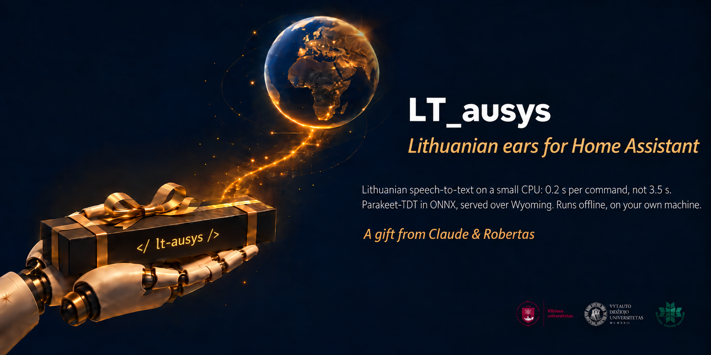

Lietuviškas balso atpažinimas Home Assistant'ui: balso komanda per 0,2 s ant paprasto procesoriaus.
Lietuviškai. Vietoje. Nemokamai.
Balso asistentui reikia burnos ir ausų. Ausys — tai kalbos atpažinimas (angl. speech to text, STT): jos išgirsta „Įjunk šviesą svetainėje“ ir paverčia tekstu, kurį Home Assistant supranta. LT_ausys yra Kristijono Jakubsono lietuviškas modelis, mūsų perkeltas į ONNX ir suspaustas, kad sparčiai veiktų ant procesoriaus, be vaizdo plokštės, ir paduodamas per Wyoming protokolą — tą patį, kuriuo Home Assistant jungia savo balso tarnybas.
Balso komandą atpažįsta per 0,21 s. Whisper šeimos modeliai (ir Paprika) tame pačiame mini PC užtrunka 3,55 s: jie kiekvienai, net trumpiausiai frazei koduoja 30 sekundžių langą.
Užtenka 4 procesoriaus branduolių ir 4 GB atminties — mini PC ar Proxmox konteinerio. Suspaustas (int8) modelis — 0,9 GB.
Skaitomoje kalboje (FLEURS) klysta 10,6 % žodžių, Paprika — 12,0 %. Home Assistant numatytasis Whisper base lietuviškai — 88 %.
Viskas sukasi jūsų kompiuteryje ar namų serveryje. Jokios paskyros, jokio API rakto, jokio mėnesinio mokesčio. Tai, kas pasakyta namuose, niekur neišeina.
Išvestis — normali rašytinė lietuvių kalba: su skyryba, didžiosiomis raidėmis ir skaičiais žodžiais („Įjunk šviesą svetainėje dvidešimt procentų.“).
Modelis — CC BY 4.0, kaip ir originalas: galima naudoti ir komerciškai, nurodant Kristijoną Jakubsoną. Serverio ir įrankių kodas — GPL-3.0.
Whisper — populiariausias atviras kalbos atpažinimo modelis, bet kiekvienai frazei, kad ir kokiai trumpai, jis koduoja fiksuotą 30 sekundžių langą. Ant procesoriaus tai kelių sekundžių kaina kiekvienai komandai. LT_ausys pagrindas — NVIDIA Parakeet-TDT transduseris, kuris apdoroja tik tiek garso, kiek jam paduota. Ta pati mašina (Ryzen 7 8845HS mini PC, 4 gijos), tos pačios 127 namų komandos:
| komandai | FLEURS žodžių klaidos | komandų ketinimo egzaminas | |
|---|---|---|---|
| LT_ausys (int8) | 0,21 s | 10,6 % | 101 / 119 |
| Paprika (Whisper large-v3-turbo) | 3,55 s | 12,0 % | 93 / 119 |
| faster-whisper tiny | 0,73 s | 99 % | 17 / 119 |
Išmatuota 2026-10-24 vienoje mašinoje. Pilnos lentelės, testų rinkiniai ir išlygos — docs/results.md.
Trys keliai — rinkitės tą, kuris arčiausiai to, ką jau turite.
pip install "onnx-asr[cpu,hub]"import onnx_asr
model = onnx_asr.load_model("RobertasTa/lt-ausys", quantization="int8")
print(model.recognize("komanda.wav")) # 16 kHz mono WAVApie 5 minutės: Python aplinka su systemd tarnyba arba vienas Docker vaizdas. Visas receptas —
README faile.
Serveris klauso prievado 10302.
wyoming-faster-whisper?Nuo 3.9 versijos jis turi onnx-asr variklį, tad naujo serverio nereikia:
wyoming-faster-whisper --uri tcp://0.0.0.0:10302 --stt-library onnx-asr \
--model RobertasTa/lt-ausys --language lt --data-dir /data --download-dir /dataŠis kelias krauna didesnį fp32 modelį (2,5 GB) ir nepaiso gijų skaičiaus; jei norite int8 — naudokite B kelią. Kodėl.
Nustatymai → Įrenginiai ir paslaugos → Pridėti integraciją → Wyoming Protocol → serverio adresas ir
prievadas 10302. Assist balso grandinėje pasirinkite lt_ausys kaip
Speech-to-text variklį ir kalbą — lietuvių.
Kad Home Assistant suprastų ir atsakytų lietuviškai, reikia trijų dalių. Visos — nemokamos ir veikia namuose:
Paties Home Assistant lietuviškos komandos („įjunk šviesą svetainėje“) jau yra.
Ausys — Kristijono Jakubsono. Modelis kmynas-parakeet-lt-v4 — tai NVIDIA Parakeet-TDT 0.6B v3, jo damokytas 3 087 valandomis lietuviškos kalbos iš Vilniaus universiteto LIEPA-3 garsyno ir paskelbtas CC BY 4.0 licencija su sąžininga kortele.
Mes (Robertas ir Claude) pridėjome tik pakavimą: perkėlimą į ONNX, suspaudimą į int8 taip, kad nenukentėtų tikslumas, Wyoming serverį, matavimus ir diegimo gidus. Jei naudojate ar platinate modelį — nurodykite Kristijoną Jakubsoną ir pasakykite, ką pakeitėte.
Ne programuotojas? Įklijuokit į bet kurį dirbtinio intelekto pokalbį (Claude, ChatGPT ar kitą) šią frazę ir toliau klausinėkit savo žodžiais:
Perskaityk https://raw.githubusercontent.com/RobertasTa/lt-ausys/main/AI_CONSULTANT_BRIEF.md
ir padėk man prijungti lietuviškas ausis LT_ausys prie Home Assistant.
Tame faile surašyta, ko asistentas turi paklausti prieš patardamas ir ko negali teigti.
Kristijonui Jakubsonui — už patį modelį. NVIDIA — už Parakeet-TDT 0.6B v3 (CC BY 4.0). Vilniaus universitetui ir raštija.lt — už LIEPA-3 garsyną (CC BY 4.0). Ilya Stupakovui — už onnx-asr, Microsoft — už onnxruntime, Open Home Foundation — už Wyoming protokolą.
Nė viena įstaiga šio projekto neremia. Pilnos padėkos su licencijomis — README pabaigoje.